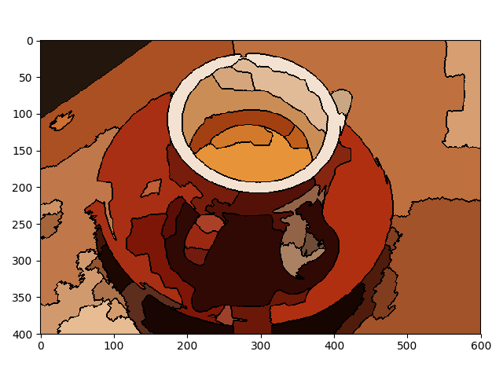

This example constructs a Region Adjacency Graph (RAG) and progressively merges regions that are similar in color. Merging two adjacent regions produces a new region with all the pixels from the merged regions. Regions are merged until no highly similar region pairs remain.
from skimage import data, io, segmentation, color
from skimage.future import graph
import numpy as np
def _weight_mean_color(graph, src, dst, n):
"""Callback to handle merging nodes by recomputing mean color.
The method expects that the mean color of `dst` is already computed.
Parameters
----------
graph : RAG
The graph under consideration.
src, dst : int
The vertices in `graph` to be merged.
n : int
A neighbor of `src` or `dst` or both.
Returns
-------
data : dict
A dictionary with the `"weight"` attribute set as the absolute
difference of the mean color between node `dst` and `n`.
"""
diff = graph.node[dst]['mean color'] - graph.node[n]['mean color']
diff = np.linalg.norm(diff)
return {'weight': diff}
def merge_mean_color(graph, src, dst):
"""Callback called before merging two nodes of a mean color distance graph.
This method computes the mean color of `dst`.
Parameters
----------
graph : RAG
The graph under consideration.
src, dst : int
The vertices in `graph` to be merged.
"""
graph.node[dst]['total color'] += graph.node[src]['total color']
graph.node[dst]['pixel count'] += graph.node[src]['pixel count']
graph.node[dst]['mean color'] = (graph.node[dst]['total color'] /
graph.node[dst]['pixel count'])
img = data.coffee()
labels = segmentation.slic(img, compactness=30, n_segments=400)
g = graph.rag_mean_color(img, labels)
labels2 = graph.merge_hierarchical(labels, g, thresh=35, rag_copy=False,
in_place_merge=True,
merge_func=merge_mean_color,
weight_func=_weight_mean_color)
g2 = graph.rag_mean_color(img, labels2)
out = color.label2rgb(labels2, img, kind='avg')
out = segmentation.mark_boundaries(out, labels2, (0, 0, 0))
io.imshow(out)
io.show()
Total running time of the script: ( 0 minutes 6.154 seconds)
 Source
Source